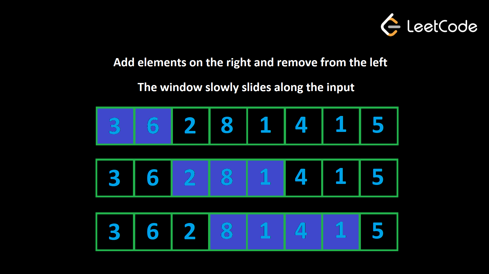

Arrays
Introduction
Arrays are among the most common data structures encountered in technical interviews. Typically, with arrays, we are concerned about two things:
- the position/index of an element
- the element itself
Advantages
- Arrays allow us to store multiple elements under a single variable name
- Accessing elements from an array is fast as long as you have the index (as opposed to linked lists where you need to traverse from the head)
Disadvantages
- Adding and removing elements into/from the middle of an array is slow (\(O(n)\)) because the other elements need to be shifted to accommodate the new/removed element (unless, of course, the element to be insterted/removed is at the end of the array)
Considerations
- Are there duplicate values in the array? Does the presence of duplicate values alter the solution?
- Slicing (e.g.,
arr[1:5]) or concatenating (e.g.,arr + [new_val]) arrays are \(O(n)\) (because they end up creating a new array, which requires copying values over), so avoid doing them when possible.
Corner Cases
- Empty array
- Array with 1 element
- Duplicated values
Time Complexity
| Operation | Complexity | Notes |
|---|---|---|
| access | \(O(1)\) | |
| search | \(O(n)\) | i.e., traversing through an array to find a value when you do not have its index |
| search (sorted array) | \(O(\textnormal{log}n)\) | if an array is already sorted in ascending order, binary search can be applied |
| insert | \(O(n)\) | inserting requires shifting all subsequent elements to the right by one, with the exception of the element being at the end, which would be \(O(1)\) |
| remove | \(O(n)\) | removing requires shifting all subsequent elements to the left by one, with the exception of the element being at the end, which would be \(O(1)\) |
Techniques
Note that these same techniques apply to strings as well, because both arrays and strings are sequences.
Sliding Window
The sliding window algorithm is used to solve problems involving contiguous subarrays or substrings within a sequence. It can potentially optimize time complexity from \(O(n^2)\) to \(O(n)\).
Algorithm
Use two pointers (often left and right) to define a window within the sequence. The window will slide across the data, expanding or contracting as needed to satisfy a given condition.
Both pointers start at the beginning of the sequence.
Expansion: the
rightpointer moves forward, expanding the window by including new elements. As elements are added, a running calculation is updated.Contraction: if the current window violates a specified condition, the
leftpointer moves forward, which shrinks the window. Elements removed from the window are then excluded from the running calculation. Use two pointers, one representing the start and the other representing the end.Expansion and contraction are repeated until the
rightpointer reaches the end of the sequence.
Example
Taken from Minimum Size Subarray Sum.
Given an array of positive integers nums and a positive integer target, our task is to return the minimal length of a subarray whose sum is greater than or equal to target. If there is no such subarray, we have to return 0.
Example 1:
Input:
target = 4, nums = [1,4,4]Output:
1Example 2:
Input:
target = 11, nums = [1,1,1,1,1,1,1,1]Output:
0
The intiutive solution is to go through all subarrays and check the sum of each one, and if the sum is greater than or equal to target, we update outr answer variable. This would be implemented via two loops; the outer loop controls the starting point, and the inner loop controls the ending point. This would take \(O(n^2)\), which is inefficient.
Brute force solution \(O(n^2)\):
def minSubArrayLen(target: int, nums: List[int]) -> int:
min_length = float(inf)
n = len(nums)
# outer loop is O(n)
for start_i in range(n):
current_sum = 0
# inner loop is O(n)
for end_i in range(start_i, n):
# accessing single index is O(1)
current_sum += nums[end_i]
if current_sum >= target:
min_length = min(min_length, end_i - start_i + 1)
break
return min_length if min_length != float(inf) else 0We can reduce the complexity of this problem by leveraging the sliding window algorithm. We will use two pointers left and right to denote the starting and ending indices of our window. These pointers will both start with the value 0.
Then, we loop over the array and increment right to add elements to our window. The constraint of this problem is reached if the window’s sum is greater than or equal to target, so when that occurs, we update the answer, and then remove elements from the window by incrementing left until the sum is less than target.
Sliding window implementation (\(O(n)\)):
def minSubArrayLen(target: int, nums: List[int]) -> int:
# both pointers start at the 0th index
left = 0
right = 0
# sum for the current window
current_sum = 0
min_length = float("inf")
# continue incrementing right until end of nums
for right in range(0, len(nums)):
current_sum += nums[right]
while current_sum >= target:
min_length = min(min_length, right - left + 1)
# remove the first element from the window
current_sum -= nums[left]
# shrink the window from the left
left += 1
return min_length if min_length != float("inf") ele 0Even though there is an inner while loop inside the outer for loop, the time complexity in the sliding window implementation is \(O(n)\). This is because the inner loop is not running \(n\) times for each iteration of the outer loop; rather, a sliding window guarantees a maximum of \(2n\) window iterations.
General Format
For a dynamic window:
def sliding_window_dynamic(seq):
# intialize the window and the response variable
right = 0
left = 0
ans = float("inf")
current_window = 0
for right in range(len(seq)):
# append seq[right] to the window
current_window += seq[right]
# while the condition is invalid, move left forward
while INVALID(window):
# remove seq[left] from the window
current_window -= seq[left]
left += 1
# attempt to update answer
ans = min(ans, current_window)
return ansTwo Pointers
The Two Pointers algorithm is a more generalized version of the Sliding Window that is best used in cases that involve finding pairs or interacting elements of q sequence that do not have to be contiguous. The pointers are allowed to cross each other, or can be on different arrays. Similar to the sliding window, instead of checkin every possible pair (i, j) (which is \(O(n^2)\)), we use two indices that move based on conditions.
Algorithm
The Two Pointers algorithm can come in a few different flavors.
Opposite direction:
- We have
leftandrightpointers that converge towards the middle of the sequence - These are useful in cases where your sequence is sorted, and the ultimate result you want is a pair of something (e.g., the smallest and the largest value).
- We have
Same direction (fast and slow):
- We have two pointers
fastandslow, where thefastpointer is incremented more than theslowpointer - This is useful in problems such as duplicate removal, and finding the longest subarray with some constraint
- This is the same thing as the Sliding Window
- We have two pointers
Two arrays (one pointer each):
- Two Pointers can also be used in separate arrays, wherein each array is assigned a pointer.
- This is useful in problems such as merging, finding the intersection, and comparing sorted lists.
Opposite Pointers Example
Taken from Neetcode’s Valid Palindrome.
Given a string s, return true if it is a palindrome, otherwise return false.
A palindrome is a string that reads the same forward and backward. It is also case-insensitive and ignores all non-alphanumeric characters.
Note: Alphanumeric characters consist of letters (A-Z, a-z) and numbers (0-9).
Example 1:
Input:
s = "Was it a car or a cat I saw?"Output:
trueExplanation: After considering only alphanumerical characters we have “wasitacaroracatisaw”, which is a palindrome.
Example 2:
Input:
s = "tab a cat"Output:
falseExplanation: “tabacat” is not a palindrome.
The brute force solution would be to create a copy of the input string, reverse it, and then check for equality. However, this is an \(O(n)\) solution with extra space.
Consider that a palindromic string is one that reads the same from the start as well as from the end, meaning that the character at the start should match the character at the end at the same index. This is a great place to apply the opposite pointers variant of the Two Pointers algorithm.
def isPalindrome(s: str) -> bool:
# intialize left and right pointers
left = 0
right = len(s) - 1
# continue iterating as long as left < right
while left < right:
# if a char is non-alphanumeric, skip it
while left < right and not s[right].isalnum():
right -= 1
# same for left
while left < right and not s[left].isalnum():
left += 1
# check for equality once both pointers have been positioned correctly
if s[right].lower() != s[left].lower():
return False
# update the pointers
right -= 1
left += 1
return TrueWhen to Use Each Technique
| Use Case | Technique | Examples |
|---|---|---|
| Do we need a contiguous subarray/substring with some property/condition (sum < X, no repeating chars, exactly K distinct, etc.) | Sliding Window (pointers move in same direction, window is of variable size) | longest substring without repeating chars, max consecutive ones |
| Is the array sorted (or can we sort it) and we are looking for pairs ot triplets that satisfy a condition (sum = target, sum < target, etc.)? | Opposite Pointers (two pointers, left = 0, right = n - 1) |
two sum II, 3sum |
| Do we need to remove duplicates, partition, or copmact an in-place array while maintaining relative order? | Same Direction Pointers (a slow and fast pointer, both moving right) |
remove duplicates from sorted array, move zeroes, sort colors |
More Examples
Two Sum II
Taken from Neetcode’s Two Integer Sum II.
Given an array of integers numbers that is sorted in non-decreasing order, return the indices (1-indexed) of two numbers, [index1, index2], such that they add up to a given target number target and index1 < index2. Note that index1 and index2 cannot be equal, therefore you may not use the same element twice.
There will always be exactly one valid solution.
Example 1:
Input:
numbers = [1,2,3,4], target = 3Output:
[1,2]Explanation: The sum of 1 and 2 is 3. Since we are assuming a 1-indexed array,
index1 = 1, index2 = 2. We return[1, 2].
Notice that we have a sorted (ascending) array, and we are looking for a pair of elements that satisfy the sum condition. This is a great place to apply the Opposite Two Pointers algorithm. Again, the key characteristic of this array is that it is sorted.
Because our array is sorted in ascending order, we can take advantage of this to implement a \(O(n)\) solution. For each pair of pointers, we find the sum [of the elements at those pointers], and if the sum is too large, we should move the right pointer inwards (to a lower value). If the sum is too small, we move the left pointer inwards (to a higher value).
def twoSum(numbers: List[int], target: int) -> List[int]:
# initialize pointers
left = 0
right = len(numbers) - 1
while left < right:
candidate_sum = numbers[left] + numbers[right]
# we want to increase the sum
if candidate_sum < target:
left += 1
# we want to decrease the sum
elif candidate_sum > target:
right -= 1
else:
return [left + 1, right + 1]
return []3Sum
Taken from Neetcode’s 3Sum.
Given an integer array nums, return all the triplets [nums[i], nums[j], nums[k]] where nums[i] + nums[j] + nums[k] == 0, and the indices i, j and k are all distinct.
The output should not contain any duplicate triplets. You may return the output and the triplets in any order.
Example 1:
Input:
nums = [-1,0,1,2,-1,-4]Output:
[[-1,-1,2],[-1,0,1]]Explanation:
nums[0] + nums[1] + nums[2] = (-1) + 0 + 1 = 0
nums[1] + nums[2] + nums[4] = 0 + 1 + (-1) = 0
nums[0] + nums[3] + nums[4] = (-1) + 2 + (-1) = 0The distinct triplets are
[-1,0,1]and[-1,-1,2].
This problem can be seen as an extension of Two Sum II. Notice, however, that we do not start with a sorted list, so the first step would be to sort the array.
Then, we can use the Opposite Two Pointers algorithm. We iterate through the list and treat each value as a first value in the triplet. Then, for the remaining two values, we apply the Opposite Pointers. We derive a sum for the first value, and the values at the pointers. If the sum is too large, we decrement right, and if it is too small, we increment left.
There is also the issue of repeated values. Since we don’t want repeated triplets in the final answer, we need to skip repeated values in the array.
def threeSum(nums: List[int]) -> List[List[int]]:
# sort the input list s.t. opp. pointers can be applied
nums.sort()
# result variable
triplets = []
# need index for pointers
for i, start_num in enumerate(nums):
# if encountering repeated start_num
if i > 0 and start_num == nums[i - 1]:
# skip this iteration
continue
# initialize pointers
left = i + 1
right = len(nums) - 1
while left < right:
candidate_sum = start_num + nums[left] + nums[right]
# too large
if candidate_sum > 0:
right -= 1
# too small
elif candidate_sum < 0:
left += 1
else:
triplets.append([start_num, nums[left], nums[right]])
# update pointers; keep looking for more valid triplets
left += 1
right -= 1
# avoid duplicate values; i.e., updated value is the same as before
# shift pointer to next unique value
while nums[left] == nums[left - 1] and left < right:
left += 1
return tripletsContainer with Most Water
Taken from Neetcode’s Container With Most Water.
You are given an integer array heights where heights[i] represents the height of the ith bar.
You may choose any two bars to form a container. Return the maximum amount of water a container can store.

Example 1:
Input:
height = [1,7,2,5,4,7,3,6]Output:
36Example 2:
Input:
height = [2,2,2]Output:
4
Let us break this problem down. We are seeking a pair of values out of the array that fulfill the “max area” criterion. This is an application of the Opposite Two Pointers algorithm.
We create our left and right pointers, find the candidate area, attempt to update the resulting max area, and then update our pointers. Note that the pointers are updated conditionally; we want to move the left pointer inwards if the left value is less than the right, and move the right pointer inwards otherwise.
def maxArea(heights: List[int]) -> int:
# initialize pointers and final max area
left = 0
right = len(heights) - 1
max_area = float("-inf")
while left < right:
# compute candidate area
candidate_area = min(heights[left], heights[right]) * (right - left)
# attempt to update
max_area = max(candidate_area, max_area)
# update pointers
if heights[left] < heights[right]:
left += 1
else:
right -= 1
return max_area if max_area != float(-inf) else 0